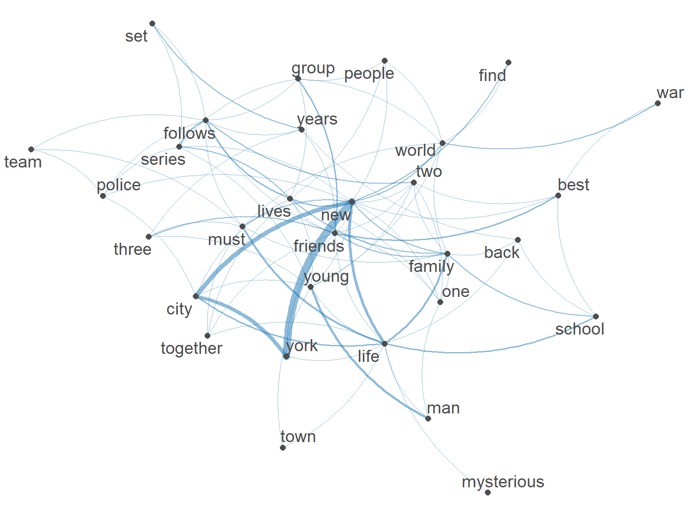
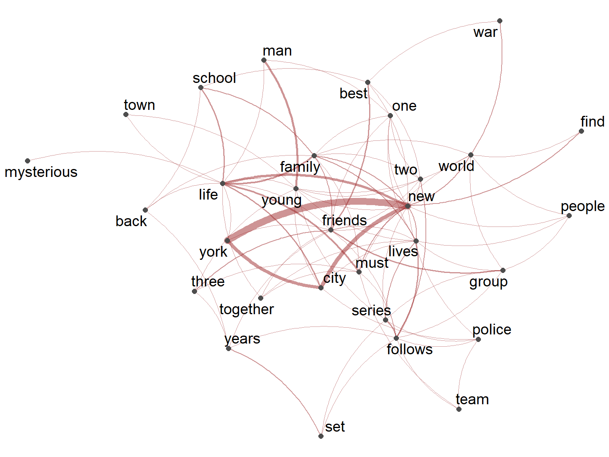

6 Collocations & co-occurrence
After working through Tutorial 6, you’ll be able to…
- Explain why we may want to go beyond the bag-of-words assumption
- Identify n-grams and keywords-in-context
- Identify collocations and co-occurrences
- Visualize co-occurrences as semantic networks
1 Beyond the bag-of-words
In Tutorials 3 and 4, we reduced texts to the frequency of their features - based on the bag-of-words assumption:
We assume that we can interpret texts without considering the order and context of features.
This assumption is often violated, for example because of…
- polysemy: “I’m going to the bank” vs. “the river bank”
- negation: “Not bad!”
- named entities: “United States”, “New York”
This is why there are text-as-data representations that violate the bag-of-words assumption less strongly:
- N-gram-based representations, e.g., keywords-in-context and collocations → this tutorial
- Syntax-based representations, e.g., part-of-speech tagging and dependency parsing → next tutorial
- Vector-based representations in semantic spaces, e.g., word embeddings → later in class
In this tutorial, we again use quanteda.textstats (for statistics such as collocations) and quanteda.textplots (for visualizations such as semantic networks), which you already installed in Tutorial 5.
We read in our TV series data and preprocess the descriptions as in Tutorial 3:
# read in the data
data <- read.csv2("data/data_tvseries.csv", encoding = "UTF-8")
# create corpus
corpus_tv <- corpus(data, text_field = "Description")
# preprocessing (without stemming)
tokens_tv <- corpus_tv |>
tokens(remove_punct = TRUE,
remove_numbers = TRUE,
remove_symbols = TRUE) |>
tokens_tolower() |>
tokens_remove(stopwords("english"))In this tutorial, we look at features in context: Which features occur next to or near each other? To interpret these results, we need to understand the features. Stems like “famili” or “york_citi” are harder to read than “family” or “york_city”.
This is a good example of how preprocessing decisions depend on your goal: The “best” preprocessing for a document-feature matrix (Tutorial 4) is not necessarily the best preprocessing for co-occurrence analyses.
2 N-grams
2.1 What are n-grams?
So far, our features were unigrams, i.e., single features. Instead, we can also use n-grams: sequences of n consecutive features. For example:
- Unigrams: “that”, “is”, “not”, “bad”
- Bigrams (n = 2): “that is”, “is not”, “not bad”
- Trigrams (n = 3): “that is not”, “is not bad”
As you see, the bigram “not bad” keeps information that gets lost when we only look at the unigrams “not” and “bad”.
In quanteda, we create n-grams with tokens_ngrams(). With the argument n, we specify how many features each n-gram should contain:
tokens("that is not bad") |>
tokens_ngrams(n = 2)Tokens consisting of 1 document.
text1 :
[1] "that_is" "is_not" "not_bad"2.2 N-grams in our data
Let’s apply this to our TV series data. Which bigrams are the most frequent? We create bigrams, turn them into a DFM (see Tutorial 4), and use topfeatures() to get the most frequent features:
tokens_tv |>
tokens_ngrams(n = 2) |>
dfm() |>
topfeatures(10) new_york high_school los_angeles
36 22 22
york_city best_friend personal_professional
18 17 13
anthology_series small_town young_man
10 9 9
young_boy
8 Among the most frequent bigrams, we find features that have a different meaning in combination than as single features, for example places (“new_york”, “los_angeles”) or expressions (“best_friend”, “high_school”).
We created bigrams after removing stopwords. This is why some bigrams consist of features that were not next to each other in the original text. For example, the first description reads “Nine noble families fight for control”. After removing the stopword “for”, the bigram “fight_control” emerges - although “for” was between both features.
If the exact order of features matters for your research question, you can create n-grams before removing stopwords - or keep empty “slots” for removed stopwords with tokens_remove(stopwords("english"), padding = TRUE).
2.3 Compounding n-grams
Sometimes, we want features that belong together (e.g., “new” and “york”) to be treated as one feature. This step, called compounding, is part of preprocessing.
In quanteda, we compound n-grams with tokens_compound(). With phrase(), we specify which features belong together. quanteda then connects them with an underscore:
tokens_comp <- tokens_tv |>
tokens_compound(pattern = phrase(c("new york city",
"high school",
"los angeles")))Did it work? Let’s check which compounded features (i.e., features containing an underscore) are in our data now. With dfm_select(), we only keep features that match the pattern "*_*", where * stands for any sequence of characters:
tokens_comp |>
dfm() |>
dfm_select(pattern = "*_*") |>
topfeatures() high_school los_angeles new_york_city
22 22 18 “high_school”, “los_angeles”, and “new_york_city” are now single features! Note that “new york” occurs 36 times (see Section 2.2), but only 18 times as part of “new york city” - the other 18 mentions were not compounded, since they do not match our pattern.
3 Keywords-in-context
Keywords-in-context (KWIC) describe - rather qualitatively - the context of keywords: Which features occur within a window of n features before and after a keyword?
In quanteda, we use kwic(). With pattern, we specify the keyword; with window, we specify how many features before and after the keyword should be shown. For example, in which contexts is the word “detective” used?
Keyword-in-context with 5 matches.
[text93, 3] story behind | detective | james gordon's rise
[text133, 8] novelist castle's books | detective | beckett seeks help
[text135, 6] links lives ceres | detective | accidental ship captain
[text154, 5] luther brilliant homicide | detective | knack getting inside
[text179, 1] | detective | ambrose employs unusualThe output shows the document (e.g., text93), the position of the keyword in the document, the three features before the keyword, the keyword, and the three features after it.
4 Collocations
Collocations describe - rather quantitatively - which features occur next to each other more often than we would expect by chance. This indicates that they share a meaning (e.g., “united” and “states”).
In quanteda.textstats, we identify collocations with textstat_collocations(). With min_count, we specify how often a collocation has to occur at least:
tokens_tv |>
textstat_collocations(min_count = 10) |>
arrange(desc(count)) |>
head(5) collocation count count_nested length lambda z
7 new york 36 0 2 9.511456 6.655613
2 high school 22 0 2 7.467916 15.765868
6 los angeles 22 0 2 13.939395 6.931229
1 york city 18 0 2 6.009372 15.851205
3 best friend 17 0 2 7.754642 14.654002The most important columns are:
-
collocation: the collocation -
count: how often the collocation occurs -
lambda: how strongly the features are associated - the larger, the less likely it is that the features occur together by chance
Looks familiar? These are almost the same features as our most frequent bigrams in Section 2.2!
5 Co-occurrence and semantic networks
5.1 Feature co-occurrence matrix
Collocations focus on features that occur directly next to each other. More generally, co-occurrence describes which features occur together, for example…
- in the same document, or
- within a window of n features.
Co-occurrences are stored in a feature co-occurrence matrix (FCM), in which both rows and columns are features, and cells show how often features co-occur.
For our TV series data, we count co-occurrences within a window of five features. The argument here is that features close to each other are more likely to share a meaning than features that “only” occur in the same document:
fcm_tv <- tokens_tv |>
fcm(context = "window", window = 5)
fcm_tvFeature co-occurrence matrix of: 5,359 by 5,359 features.
features
features nine noble families fight control lands westeros ancient enemy
nine 0 1 1 1 1 1 0 0 0
noble 0 0 1 1 1 1 1 0 0
families 0 0 0 1 1 1 1 1 0
fight 0 0 0 2 1 1 1 2 2
control 0 0 0 0 0 1 1 1 1
lands 0 0 0 0 0 0 1 1 1
westeros 0 0 0 0 0 0 0 1 1
ancient 0 0 0 0 0 0 0 0 1
enemy 0 0 0 0 0 0 0 0 0
returns 0 0 0 0 0 0 0 0 0
features
features returns
nine 0
noble 0
families 0
fight 0
control 1
lands 1
westeros 1
ancient 1
enemy 1
returns 0
[ reached max_nfeat ... 5,349 more features, reached max_nfeat ... 5,349 more
features ]Our FCM is large: It contains all features of our data as both rows and columns.
5.2 Semantic networks
To make sense of co-occurrences, we can visualize them as semantic networks:
- nodes = features
- edges = co-occurrences (the thicker an edge, the more often features co-occur)
Since networks with thousands of features are unreadable, we only keep the 30 most frequent features. We get them with topfeatures() (see Tutorial 4) and names(), which only keeps the names of the features:
top_features <- tokens_tv |>
dfm() |>
topfeatures(30) |>
names()
top_features [1] "life" "new" "family" "young" "world"
[6] "lives" "series" "two" "city" "group"
[11] "follows" "friends" "must" "years" "team"
[16] "school" "one" "find" "three" "york"
[21] "man" "town" "together" "set" "mysterious"
[26] "back" "war" "best" "people" "police" Then, we reduce our FCM to these features with fcm_select() and visualize it with textplot_network(). With min_freq, we only show edges between features that co-occur frequently:
fcm_tv |>
fcm_select(pattern = top_features) |>
textplot_network(min_freq = 0.8)
For example, “new”, “york”, and “city” are strongly connected - as are “family” and “life”.
💡 Take-Aways
-
n-grams: sequences of n consecutive features:
tokens_ngrams() -
compounding: combining features into one feature:
tokens_compound() -
keywords-in-context: features around a keyword:
kwic() -
collocations: consecutive features that occur together more often than by chance:
textstat_collocations() -
co-occurrence: features that occur together (in a document or window), stored in a feature co-occurrence matrix:
fcm() -
semantic networks: visualization of co-occurrences:
textplot_network()
🤓 Smart Hacks
By default, textstat_collocations() identifies collocations of two features. With the argument size, we can also identify longer collocations, e.g., of three features:
tokens_tv |>
textstat_collocations(min_count = 5, size = 3) |>
arrange(desc(count)) |>
head(3) collocation count count_nested length lambda z
1 new york city 18 0 3 -0.9476291 -0.3817412
3 high school student 6 0 3 -2.4694454 -1.1504667
2 personal professional lives 5 0 3 -1.0884709 -0.5014075textplot_network() offers several arguments to change how networks look, e.g., the color of edges (edge_color) and labels (vertex_labelcolor):
fcm_tv |>
fcm_select(pattern = top_features) |>
textplot_network(min_freq = 0.8,
edge_color = "#9E2A2B",
vertex_labelcolor = "black")
🎲 Quiz
📚 More tutorials on this
You still have questions? The following tutorials & papers can help you with that:
📌 Test your knowledge
For the following tasks, we use a new data set: 5,000 news articles on climate change from India, the USA, and Germany. Download the data as a news_climate_change.RData file from Moodle and save it in your subfolder data.
The data contains, among others, the following variables:
-
text_clean: the text of the article (including information such as its publication date) -
country: the country the article was published in (“India”, “USA”, or “Germany”)
Since the data is saved as an .RData file, we read it in with load(). This creates an object called corpus. To avoid confusion with the function corpus(), we rename it to data_climate:
Task 1 (Easy🔥)
Climate change can be described in different ways, e.g., as “climate change”, “climate crisis”, or “global warming”.
How often does each of these three terms occur in the articles?
Hint: Preprocess the texts as in this tutorial (without stemming) and have a look at Section 2.3 on compounding.
Task 2 (Medium🔥🔥)
Visualize the frequency of these three terms across the countries in the data set (India, Germany, USA).
Do the countries differ in how they describe climate change?
Hint: Have a look at Tutorial 5 on comparing groups with textstat_frequency() and on bar charts with ggplot().
Task 3 (Hard🔥🔥🔥)
How has the use of the three terms “climate change”, “climate crisis”, and “global warming” developed over time?
- Create a variable
yearthat contains the publication year of each article. You need to extract the year from the variabletext_clean- keep only articles published between 2006 and 2018. - Calculate the share of articles per year and country that mention each of the three terms.
- Visualize the development over time with a line chart: one panel per country, with one line per term.
This task goes beyond what we have covered in the tutorials so far (e.g., extracting dates from text, reshaping data). For this task, you are explicitly allowed to use AI tools such as ChatGPT.
However, you remain responsible for your code: Make sure that you understand what each line does and check whether the results make sense (e.g., by looking at a few articles and their extracted years). Remember that AI is not allowed in the exam - so use it as a learning aid, not as a replacement for understanding.